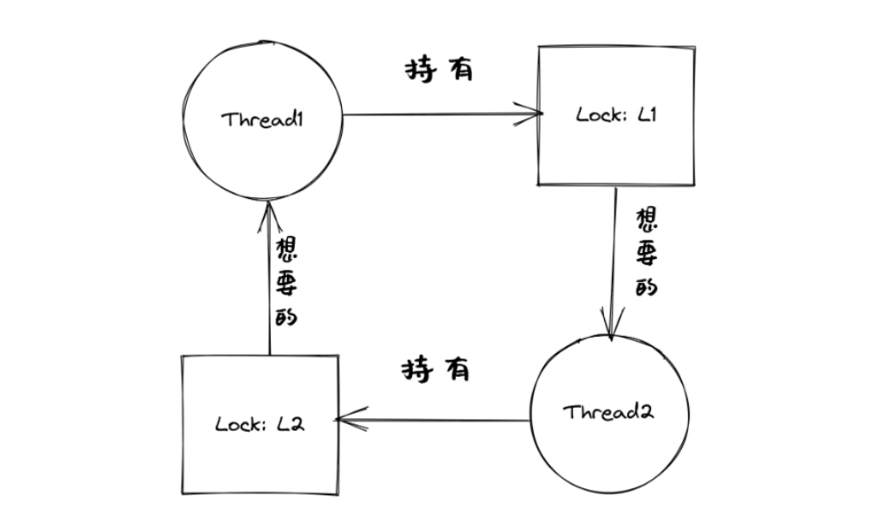

并发中的问题#
本节导读#
应用程序员在开发并发应用的过程中，经常由于各种 不小心 编写出各种并发缺陷。并发缺陷有很多种，典型的主要有三类：互斥缺陷、同步缺陷和死锁缺陷。了解这些缺陷的模式是写出健壮、正确并发程序的关键。
互斥缺陷#
互斥缺陷也称为违反原子性缺陷，在并发应用程序中对共享变量没进行合理的保护是导致出现这类缺陷的一个重要原因。下面是一个简单的例子：
1static mut A: usize = 0;
2//... other code
3unsafe fn thr1() -> ! {
4 if (A == 0) {
5 println!("thr1: A is Zero --> {}", A);
6 }
7 //... other code
8}
9unsafe fn thr2() -> ! {
10 A = A+1;
11 println!("thr2: A is One --> {}", A);
12}
A是共享变量。粗略地看，可以估计执行流程为：第一个线程thr1检查A的值，如果为0，则显示“”thr1: A is Zero –> 0”；第二个线程thr2将A的值由0设置为1（因为除了初始化之外没有其他地方修改了A的值），并显示”thr2: A is One –> 1”。但如果线程thr1执行完第4行代码，准备执行第5行代码前发生了线程切换，开始执行线程th2；当线程thr2完成第10行后，操作系统又切换回线程thr1继续执行，那么线程thr1就会输出“thr1: A is Zero –> 1” 这样的奇怪结果。
这里出现问题的根源是线程在对共享变量进行访问时，违反了临界区的互斥性（原子性）原则。解决这样的问题需要给共享变量的访问加锁，确保每个线程访问共享变量时，都持有锁，修改后的代码如下：
1static mut A: usize = 0;
2//... other code
3unsafe fn thr1() -> ! {
4 mutex.lock();
5 if (A == 0) {
6 println!("thr1: A is Zero --> {}", A);
7 }
8 mutex.unlock();
9 //... other code
10}
11unsafe fn thr2() -> ! {
12 mutex.lock();
13 A = A+1;
14 println!("thr2: A is One --> {}", A);
15 mutex.unlock();
16}
这种问题如果能发现，那么修复相对比较简单，即在对共享变量进行访问的代码区域前后加上请求锁和释放锁的操作。但主要的问题是发现缺陷比较难，特别是代码量比较大，代码的控制逻辑比较复杂的情况。
同步缺陷#
同步缺陷也称为违反顺序缺陷，在并发应用程序中对共享变量访问的先后顺序的可能性没有充分分析是导致出现这类缺陷的一个重要原因。下面是一个简单的例子：
1static mut A: usize = 0;
2...
3unsafe fn thr1() -> ! {
4 ... //在某种情况下会休眠
5 A = 1;
6 ...
7}
8unsafe fn thr2() -> ! {
9 if A==1 {
10 println!("Correct");
11 }else{
12 println!("Panic");
13 }
14}
15pub fn main() -> i32 {
16 let mut v = Vec::new();
17 v.push(thread_create(thr1 as usize, 0));
18 sleep(10);
19 ...
20 v.push(thread_create(thr2 as usize, 0));
21 ...
22}
A是共享变量。粗略地看，可以估计执行流程为：线程thr1先被创建，等了10ms后，线程thr2再被创建。一般情况下，这就导致了thr1先于thr2执行，即第5行会先于第9行执行，得到预期的结果。但可能出现一种执行情况：线程thr1在执行第5句前，由于某种原因进入了休眠，导致线程thr2执行第9行在前，线程th1执行第5行在后，导致获得非预期的错误结果。
这里出现问题的根源是线程在对共享变量进行访问时，违反了临界区的预期顺序原则。解决这样的问题需要给线程的相关代码位置加上同步操作（如通过信号量或条件变量等），确保线程间的执行顺序符合预期，修改后的代码如下：
1static mut A: usize = 0;
2semaphore.value = 0; //信号量初值为0
3unsafe fn thr1() -> ! {
4 ... //在某种情况下会休眠
5 A = 1;
6 semaphore.up();
7 ...
8}
9unsafe fn thr2() -> ! {
10 semaphore.down(); // 需要等待 semaphore.up()的唤醒
11 if A==1 {
12 println!("Correct");
13 }else{
14 println!("Panic");
15 }
16}
17pub fn main() -> i32 {
18 let mut v = Vec::new();
19 v.push(thread_create(thr1 as usize, 0));
20 sleep(10);
21 ...
22 v.push(thread_create(thr2 as usize, 0));
23 ...
24}
这种问题如果能发现，那么修复相对也比较简单，即在线程的代码区域设置合理的同步操作，让线程间的执行顺序符合预期。但主要的问题还是发现缺陷比较难，特别是代码量比较大，代码的控制逻辑比较复杂的情况。
也许有同学说，这样的错误缺陷很容易发现呀，只要开发者在编写时注意一下，就可以了。但其实不尽然，因为我们这里给出的是一个刻意简化的例子，在实际的并发应用程序中，由于代码量远大于这个例子，控制逻辑会有循环、跳转、函数调用等，涉及到的共享变量的数量、访问操作，以及与互斥/同步操作的关系等会错综复杂，难以一下子就能一目了然地分析清楚，导致很容易出现互斥和同步缺陷。
死锁缺陷#
除了上面的两类并发缺陷，还有一类导致程序无法正常执行的并发缺陷 – 死锁（Dead lock）。在并发应用中，经常需要线程排他性地访问若干种资源。大部分死锁都和不可抢占的资源相关，这里把线程需要申请获取、排他性使用和释放的对象称为资源（resource）。需要互斥访问的共享变量就是一种资源。操作系统通过互斥锁、信号量或条件变量等同步互斥机制，能授权一个线程（临时）具有排他地访问某一种资源的能力。下面是一个死锁的例子：
1unsafe fn thr1() -> ! {
2 mutex1.lock();
3 mutex2.lock();
4 ...
5}
6unsafe fn thr2() -> ! {
7 mutex2.lock();
8 mutex1.lock();
9 ...
10}
当线程thr1持有锁mutex1，正在等待另外一个锁mutex2，而线程thr2持有锁mutex2，正在等待另外一个锁mutex1时，死锁就产生了。
{kind=link}
对于这个代码，可以很容易避免死锁：
1unsafe fn thr1() -> ! {
2 mutex1.lock();
3 mutex2.lock();
4 ...
5}
6unsafe fn thr2() -> ! {
7 mutex1.lock();
8 mutex2.lock();
9 ...
10}
只要线程thr1和线程thr2都用相同的请求锁顺序，就不会发生死锁了。但这与上面的分析一样，对于实际的复杂程序，发现死锁就是一个很费劲的事情。目前计算机科学家对死锁的研究比较深入，指出了死锁产生的四个必要条件：
互斥：线程互斥地访问资源。
持有并等待：线程已持有了部分资源，同时又在等待其他资源。
非抢占：线程已持有的资源不能被抢占。
循环等待：线程之间存在一个资源持有/等待的环，环上每个线程都持有部分资源，而这部分资源又是下一个线程在等待申请的资源。
死锁预防#
如果线程间产生了死锁，那么上面四个条件一定会发生。换个角度来看，如果这四个条件中的任意一个没有满足，死锁就不会产生。
一个比较实用的预防死锁的方法是打破循环等待，具体做法就是给锁/访问的资源进行排序，要求每个线程都按照排好的顺序依次申请锁和访问资源。这种顺序性避免了循环等待，也就不会产生死锁。
死锁避免#
计算机科学家Dijkstra在1965年为THE操作系统设计提出的一种死锁避免（avoidance）的调度算法，称为银行家算法（banker’s algorithm）算法的核心是判断满足线程的资源请求是否会导致整个系统进入不安全状态。如果是，就拒绝线程的资源请求；如果满足请求后系统状态仍然是安全的，就分配资源给线程。
状态是安全的，是指存在一个资源分配/线程执行序列使得所有的线程都能获取其所需资源并完成线程的工作。如果找不到这样的资源分配/线程执行序列，那么状态是不安全的。这里把线程的执行过程简化为：申请资源、释放资源的一系列资源操作。这意味这线程执行完毕后，会释放其占用的所有资源。
我们需要知道，不安全状态并不等于死锁，而是指有死锁的可能性。安全状态和不安全状态的区别是：从安全状态出发，操作系统通过调度线程执行序列，能够保证所有线程都能完成，一定不会出现死锁；而从不安全状态出发，就没有这样的保证，可能出现死锁。

银行家算法的数据结构#
为了描述操作系统中可利用的资源、所有线程对资源的最大需求、系统中的资源分配，以及所有线程还需要多少资源的情况，需要定义对应的四个数据结构：
可利用资源向量 Available：含有 m 个元素的一维数组，每个元素代表可利用的某一类资源的数目，其初值是该类资源的全部可用数目，其值随该类资源的分配和回收而动态地改变。Available[j] = k，表示第j类资源的可用数量为k。
最大需求矩阵Max：n * m矩阵，表示n个线程中，每个线程对m类资源的最大需求量。Max[i,j] = h，表示线程i需要第j类资源的最大数量为h。
分配矩阵 Allocation：n * m矩阵，表示每类资源已分配给每个线程的资源数。Allocation[i,j] = g，则表示线程i当前己分得第j类资源的数量为g。
需求矩阵Need：n * m的矩阵，表示每个线程还需要的各类资源数量。Need[i,j] = d，则表示线程i还需要第j类资源的数量为d。
上述三个矩阵间存在如下关系:
Need[i,j] = Max[i,j] - allocation[i, j]
银行家算法的步骤#
设 Request是线程的请求资源矩阵，如果 Requesti[i,j] = t，表示线程thr[i]需要t个第j类型的资源。当线程thr[i]发出资源请求后，操作系统的银行家算法按下述步骤执行:
如果 Request[i,j] ≤ Need[i,j]，则转步骤2；否则出错，因为线程所需的资源数已超过它所宣布的最大值。
如果 Request[i,j] ≤ Available[j]，则转步骤3；否则，表示尚无足够资源，线程thr[i]进入等待状态。
操作系统试着把资源分配给线程thr[i]，并修改下面数据结构中的值：
1Available[j] = Available[j] - Request[i,j];
2Allocation[i,j] = Allocation[i,j] + Request[i,j];
3Need[i,j] = Need[i,j] - Request[i,j];
操作系统执行安全性检查算法，检查此次资源分配后系统是否处于安全状态。若安全，则实际将资源分配给线程thr[i]；否则不进行资源分配，让线程thr[i]等待。
安全性检查算法#
安全性检查算法如下:
设置两个向量:工作向量Work，表示操作系统可提供给线程继续运行所需的各类资源数目，它含有m个元素，初始时，Work = Available；结束向量Finish，表示系统是否有足够的资源分配给线程，使之运行完成。初始时 Finish[0..n-1] = false，表示所有线程都没结束；当有足够资源分配给线程时，设置Finish[i] = true。
从线程集合中找到一个能满足下述条件的线程
1Finish[i] == false;
2Need[i,j] <= Work[j];
若找到，执行步骤3，否则，执行步骤4。
当线程thr[i]获得资源后，可顺利执行，直至完成，并释放出分配给它的资源，故应执行:
1Work[j] = Work[j] + Allocation[i,j];
2Finish[i] = true;
跳转回步骤2
如果Finish[0..=n-1] 都为true，则表示系统处于安全状态；否则表示系统处于不安全状态。
通过操作系统调度，如银行家算法来避免死锁不是广泛使用的通用方案。因为从线程执行的一般情况上看，银行家算法需要提前获知线程总的资源申请量，以及未来的每一次请求，而这些请求对于一般线程而言在运行前是不可知或随机的。另外，即使在某些特殊情况下，可以提前知道线程的资源申请量等信息，多重循环的银行家算法开销也是很大的，不适合于对性能要求很高的操作系统中。